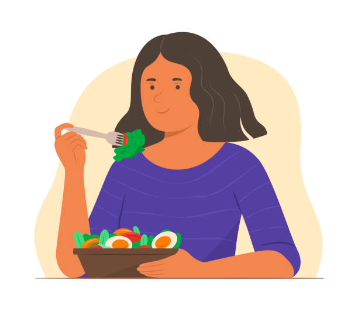

Dicas para uma Dieta Equilibrada
Aqui estão algumas dicas sobre como manter uma alimentação saudável, informações sobre nutrientes e exemplos de refeições saudáveis.
Variedade de Alimentos
Inclua uma ampla gama de frutas, vegetais, grãos integrais, proteínas magras e gorduras saudáveis na sua dieta. Isso garante que você receba todos os nutrientes essenciais.
Hidratação

Beba bastante água ao longo do dia. A hidratação adequada é fundamental para o funcionamento do corpo e pode ajudar a controlar a fome.
Planejamento das Refeições

Prepare suas refeições com antecedência para evitar escolhas alimentares impulsivas. Isso também pode ajudar a garantir que você tenha opções saudáveis à mão.